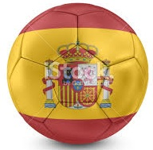

Posiciones Quiniela
Updated July 1st at 8PM CST
1. Askhat Turlybayev  |
293 ptos |
| 2. Luis Parilli |
283 ptos |
| 3. Jorge A. Gimenez |
283 ptos |
| 4. Jose Vivas |
281 ptos |
| 5. Valeria Rincon |
274 ptos |
| 6. Andres Carvajal |
272 ptos |
| 7. Leonardo Rendon |
269 ptos |
| 8. Manuel Godoy |
265 ptos |
| 9. Felipe Silva Ardila |
262 ptos |
10. Javier Ajjam  |
262 ptos |
| 11. Daniel Alonzo |
261 ptos |
| 12. Rodrigo Feliu  | 259 ptos |
| 13. Antonio L. Gonzalez |
252 ptos |
| 14. Pablo E Ruggeri |
252 ptos |
15. Cristina Gonzalez  |
250 ptos |
| 16. Ricardo Vielma |
249 ptos |
| 17. Luis G Parra |
249 ptos |
| 18. Tomas Zirczy |
248 ptos |
| 19. Hernando Lopez |
248 ptos |
| 20. Nayeem Khalid |
240 ptos |
| 21. Erika Guillen |
235 ptos |
| 22. Manuel Godin |
232 ptos |
23. Daniel Parra  |
225 ptos |
| 24. Matt Mciver |
224 ptos |
| 25. Luis Escamillo |
222 ptos |
| 26. Javier Ochoa |
219 ptos |
| 27. Gustavo Plaza |
218 ptos |
| 28. Luis M. Otero |
218 ptos |
| 29. Franco Rivero |
217 ptos |
| 30. Jessica Gonzalez | 214 ptos |
| 31. Antonio J. Gonzalez |
211 ptos |
| 32. Javier Arturo Nunez | 209 ptos |
Suarez